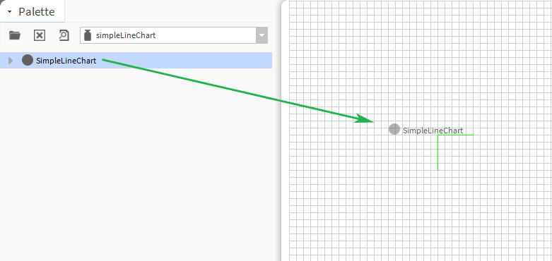
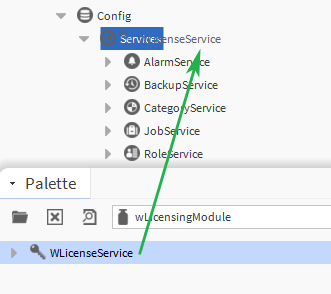
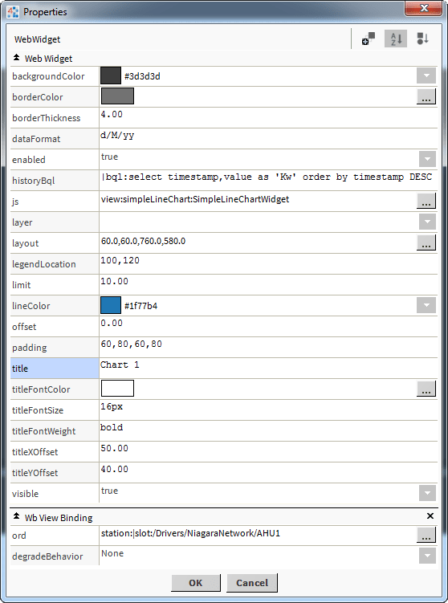

Name: simpleLineChart-ux
Resources: none
References: d3.js V3, c3.js
The chart has a number of configurable properties that can be used to modify look, feel, and functionality.

For versions 1.x - The widget must be licensed with us. Licenses are bound to the stations host Id. Email us your host id(s) so we can generate a license for you.
You must add our licensing module to your station services. This module retrieves the license from our servers and save it to your stations
shared folder directory.
The widget can still be used and configured but will disable itself after a few seconds.
Note: you must have a valid internet connection at least once to get the license file.

For versions 2.x + licensing is done via Niagara Central.
The chart has a number of configurable properties that can be used to modify look, feel, and functionality. Change the properties as required:

There is 1 main ord value references.
Ord Value - this is the live value of the meter or the main meter value. The ord reference should
be a numeric point or numeric writable. It can an absolute ord, e.g.
station:|slot:/Drivers/NiagaraNetwork/AHU5 or relativised ORD e.g.
slot:AHU5
The ord should point to a numeric point/writable that has a numeric interval extension.
Changing Widget Properties - most properties are self-explanatory but some require some explaining.
Date Format
Examples:
You can bind the chart to a history bql query. Change the properties as required:
1. Set the value binding to an absolute or relativised ORD.
Example: station:|slot:/Drivers/NiagaraNetwork/AHU1
2. Set the history BQL property.
Example: |bql:select timestamp,value as 'Kw' order by timestamp DESC
1. Create an html page and place in your station files directory.
2. Create a div element and give it an id so you can inject the widget into this area. E.g.: widget1
3. Add the following script before the closing head tag. E.g.:
Copyright © 2018 WSE Ltd. All rights reserved.